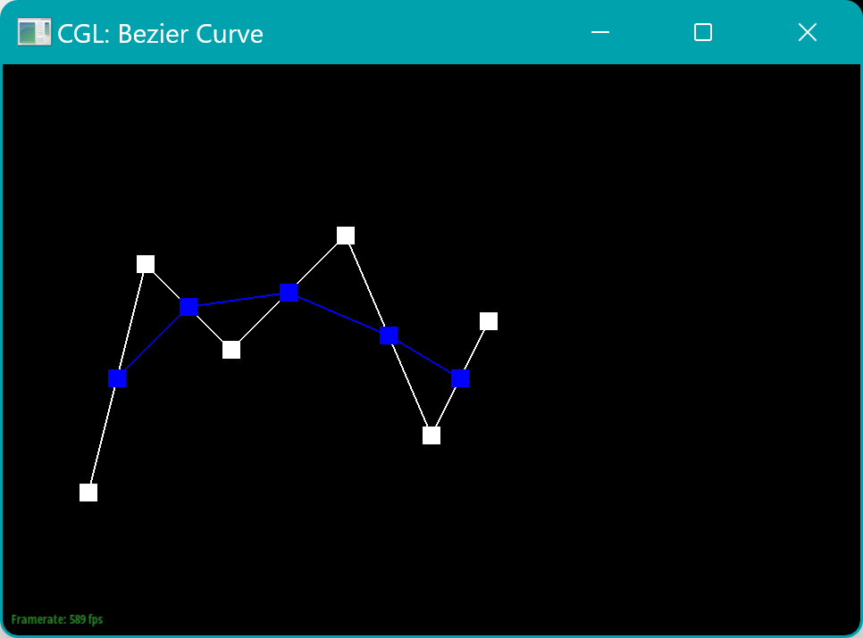
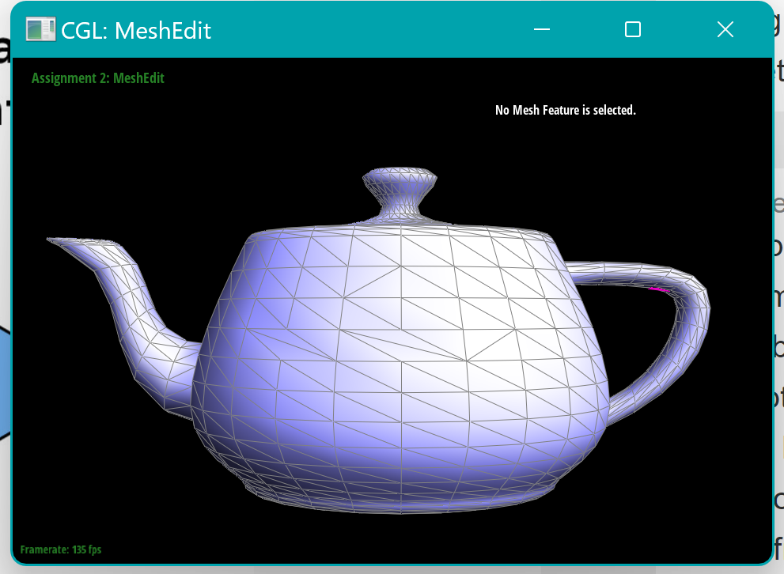
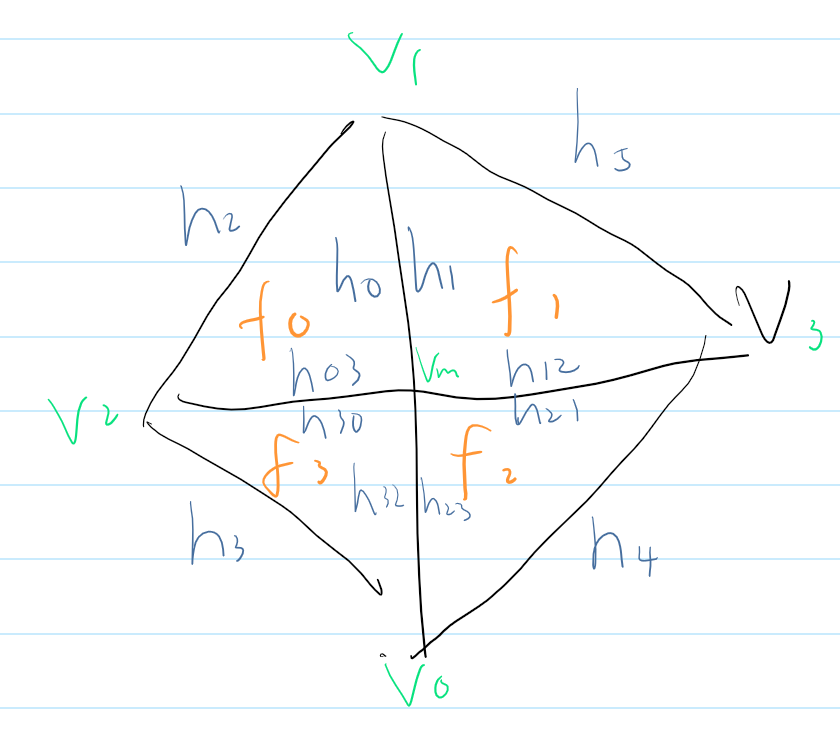
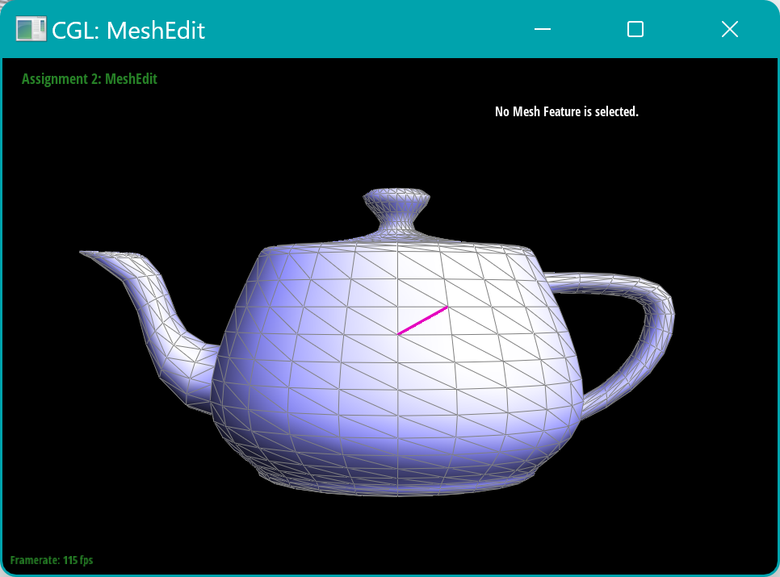
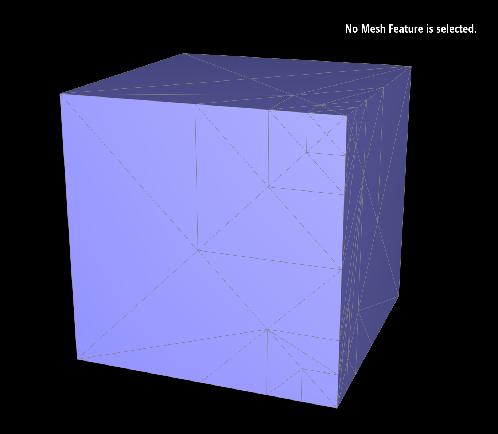

CS 184 Homework 1: Rasterizer
This assignment is in https://cs184.eecs.berkeley.edu/sp24/docs/hw2-spec
Submission doc is in https://cal-cs184-student.github.io/hw-webpages-sp24-Zzz212zzZ/hw2/index.html
Collaborated by Yekang Chang and Jie Zeng
Overview
This homework explores algorithms for manipulating and evaluating curves, surfaces, and mesh topologies. It covers the de Casteljau algorithm for Bezier curves and extends its principles to Bezier surfaces, discusses mesh editing operations, including edge flipping and splitting, and delves into mesh smoothing through Loop subdivision. Through iterative processes, these methods are applied to manipulate geometric shapes, demonstrating their transformation from simple structures to complex, smoothed surfaces.
Task 1
Casteljiu's algorithm firstly computes an interpolated point of each adjacent pair of control points, and each such iteration would reduce the number of one point by one until there remains only one point. In the implemented evaluateStep, it is essentially one iteration of the interpolation of each adjacent pair of control points. This point is the evaluated point through the parameter t. We first loop through current control points, while calculating the interpolated point of two adjacent control points. Then we collect the interpolated points and return them.
The custom file is drawn below:
Level 0:

Level 1:

Level 2:
Level 3:
Level 4:
Level 5:
-
Task 2
Since the de Casteljau algorithm is a recursive method used for evaluating Bezier curves at a given parameter value. This method extends naturally to Bezier surfaces by applying the algorithm in two dimensions.
For Bezier surfaces, the control points are organized in a grid rather than a single vector. The surface is defined over a rectangular domain by two parameters, u and v,
Implementation:
- evaluateStep Function: This implemented function is essentially same as the one implemented in Question 1, but it takes 3D points for interpolation.
- evaluate1D Function: We make it work by repeatedly calling evaluateStep to reduce the set of control points until only a single point remains, which is the evaluated point on the curve at t. This function is used twice in the process of evaluating a Bezier surface: once for each parameter direction (u and v).
- evaluate This is where the Bezier surface is evaluated at parameters (u, v). Let it first constructs intermediate curves in one parameter direction (suppose u) by treating each row of control points as a separate Bezier curve and applying evaluate1D. The points obtained from these intermediate curves are then treated as control points for a final Bezier curve in the perpendicular direction (v), and evaluate1D is used again to find the final point on the surface at (u, v).
The rendered teapot.bez is shown below:
Task 3
Start with a zero vector to accumulate the area-weighted normals. Then iteration is conducted by the HalfedgeCIter. Each triangle connected to the current vertex is iterated and the square is calculated. We use the cross product of two triangle edges to find the face (triangle) normal, for the weighted area part, we get inspired by ChatGPT that the cross product of those edges is twice the area of the triangle, so that coefficient of 2 doesn’t matter when calculating the weighted sum. Finally, the accumulated N is normalized so that its magnitude is 1.
Task 4
We split the edge flip process into two parts: elements identification and reassignation. As long as the input e0 is not a boundary, which means it has a twin part, we implement the elements identification and find4 vertices, 6 halfedges and 2 faces. For the implementation tricks, we found the setNeighbors() function in halfEdgeMesh.h file which can set the pointers in one go instead of manually setting every pointer. Then setNeighbors is used to reassign connected elements of one halfedge, and set halfedge of each vertex as well as face.

Our first attempt failed because of the wrong parameters in the setNeighbors() function and the lack of setting vertices and face pointers. After redrawing the triangle example we fixed the parameters, but some bugs still existed like sometimes if we re-flip the edge, the triangle became black. Then we realized that might due to the lack of setting vertices and faces halfedges pointers.
Task 5

This is what the mesh looks like after edge splitting. 1 vertex, 2 faces, 3 edges, and 6 halfedges are added in the newly split mesh. After initializing these elements, we first set neighbors of the new 6 edges, and updated the neighbors of the originally existing h0 and h1. Then, all of the 4 original edges h1, h2, h3, h4 are updated by reassigning their next. So far, both the added and the existing halfedges have been updated. Then, the vertices are updated by setting their halfedge (to make a note: a vertex may have multiple halfedges which come from this same vertex, we uniformly chose the inner edge, instead of the border edge. E.g., the halfedge of v1 is set to be h1 instead of h2). Then, the newly created edges and faces are set to assign their halfedge. So far, all work has been completed.

- Origin (before flipping/splitting):
- After flipping (highlighted by Magenta):

- After splitting the horizontal edge right under the highlighted Magenta edge:
Task 6
Following the function comments, we first iterated over all vertices in the mesh and computed their new positions based on the Loop subdivision weighting rules. For each vertex, we accumulated the positions of adjacent vertices and calculated the weighted average, considering the vertex's degrees. To avoid accidental changes to the original mesh too early, we found the Vertex::newPosition helpful.
Then we looped through all the edges calculated the new positions for the midpoints of all edges and stored these in Edge::newPosition. The rule we used here is:
We then split every original edge in the mesh to create new vertices at the edge midpoints. This was done by iterating over a list of original edges collected before starting the splitting process. After splitting, we used the isNew of the edges to distinguish new and old edges. For the newly created edges, we used a if statement to check whether it connects old and new vertices and flip that edge.
Finally, we updated the positions of all vertices, both original and new, to the positions computed in previous steps. This finalized the new geometry of the subdivided mesh.
- loop subdivisions without pre-splitting:
- loop subdivisions with pre-splitting:

The loop subdivision makes the sharp corners and edges smoother, but sometimes we don’t want to see that kind of smooth, we can reduce this effect by pre-splitting some edges.
We added the number of edges around the sharp features through splitting and the corners or edges became less smooth after several loop subdivisions.
Slightly asymmetric after repeated subdivisions:
The asymmetry occurs due to the way the Loop subdivision averages vertex positions. If the initial mesh lacks sufficient edges, the resulting vertex positions after subdivision may be unevenly distributed due to the uneven influence of adjacent vertices. The original edges of the cube have more influence than the center of the faces, leading to an asymmetric subdivision.
Before Pre-processing: When initially loading the cube, each face has only one edge. After subdivision, vertices on the original edges are averaged with their neighboring vertices, but since each face only has one edge, the new vertices created during subdivision are not evenly distributed, leading to asymmetry.
After Pre-processing: By pre-splitting each face of the cube so that each face has two diagonal edges, we introduce additional geometry that helps in distributing the new vertices more evenly upon subdivision.
We can pre-process the cube with edge splits on each side of the cube to ensure that there are 2 diagonals on each side of the cube like this:
Symmetric version: